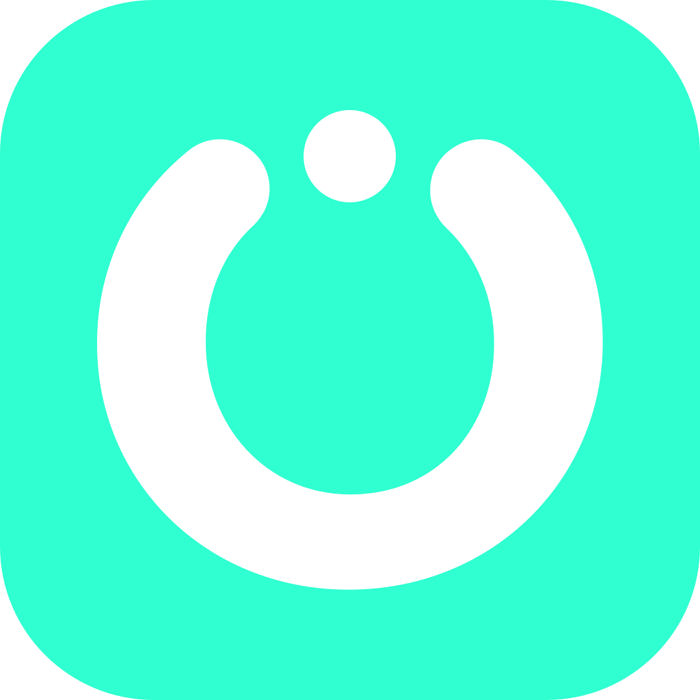
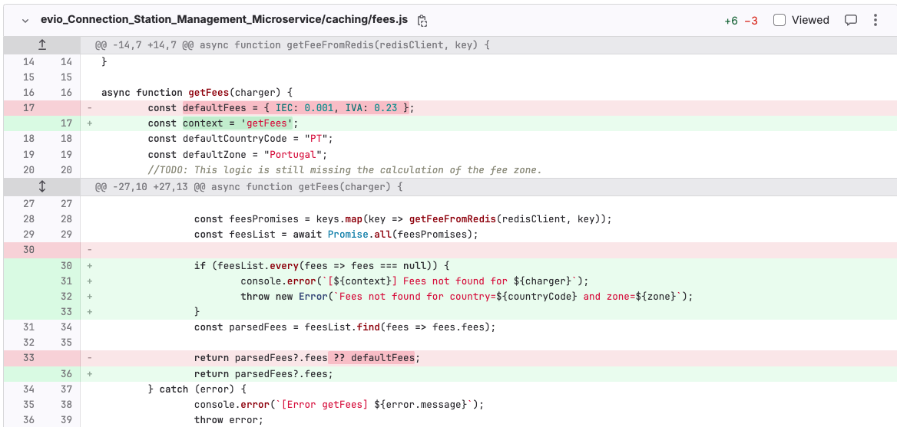
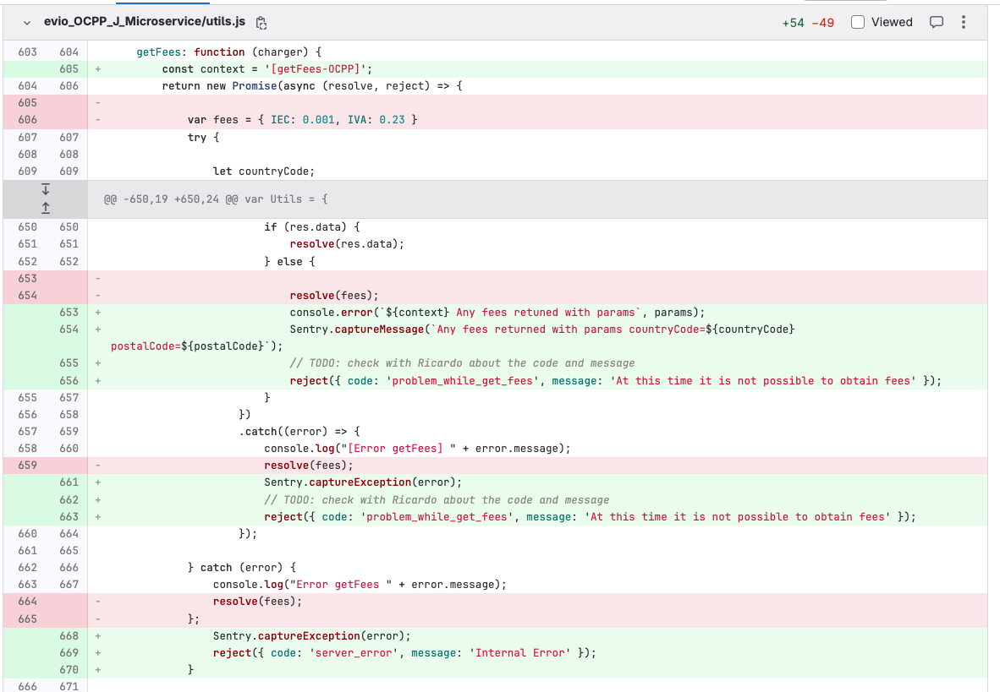
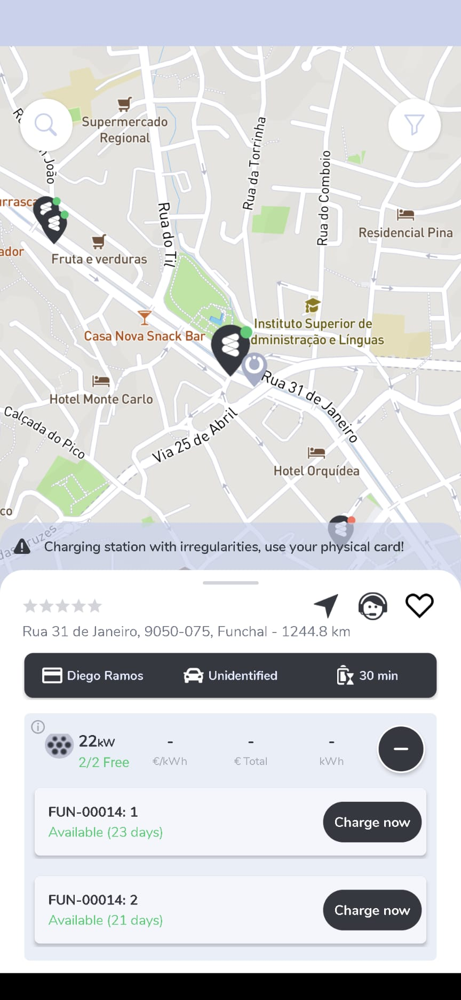
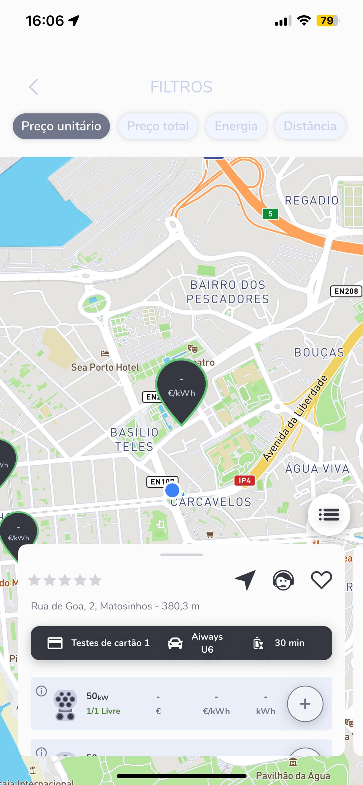
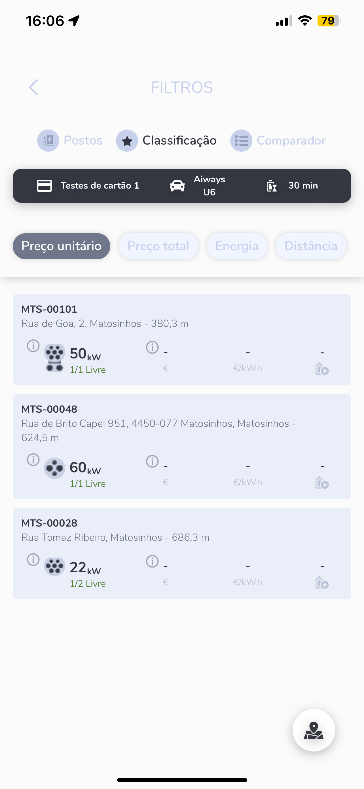
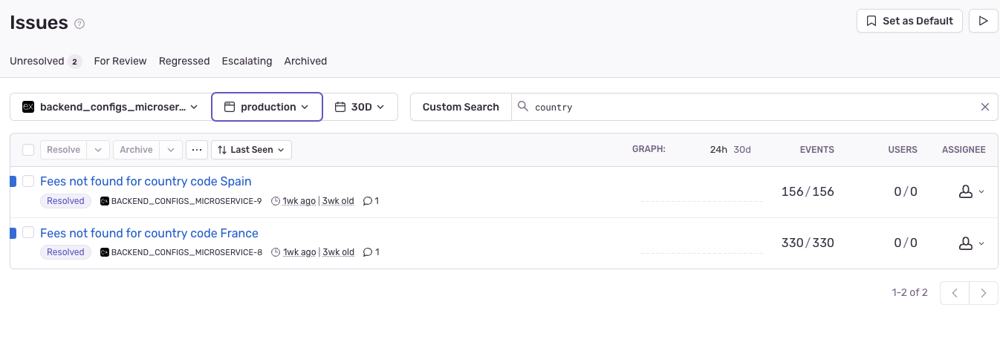

The topic covered here is part of a larger effort (epic: "Existência de default values em backend (EVIO-2848)").
Today we will cover VAT related those items:
Our goal it's simple: Avoid default values when we are unable to obtain fee settings (for any reason) and avoid problems with incorrect billing.
During the analysis we realized that our applications were programmatically returning default values for all error cases, that is, the expected behavior was exactly this.
So...
It was never a bug, but a feature. :D


We refactored the code so that we no longer use default values and provide feedback to the user considering the context of use.
In cases where we do not find VAT settings, we will have the same behavior as we currently have with Tesla.
This change was release on backend_all_v3.9.5 (April 8th).



In cases where we do not find VAT settings, we send feedback to the app and prevent the session from starting.
This change are planned to be released on backend_all_v4.0.1.
In cases where we do not find VAT settings, we prevent the session from starting.
This change are planned to be released on backend_all_v4.0.1.
We created an alert in Sentry so that when a fee configuration is not found, we are notified in the Teams alert channel and an email is also sent to Rui.
